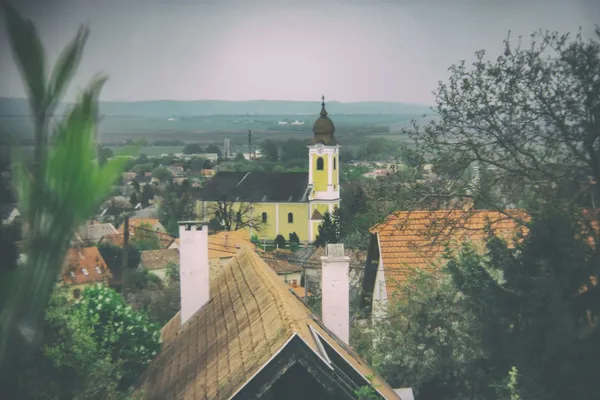

Hungary: Pálinka (fruit brandy)

Photo: Andras Kovacs on Unsplash
Pálinka is Hungary's protected fruit spirit, with famous apricot pálinka from Kecskemét and plum from Szatmár.
How it's made
Must be made only from fruit grown in Hungary, with no added sugar or flavourings.
Whole ripe fruit is mashed and fermented, then distilled, usually twice in small copper pot stills or once in a pot still with a short column. The distiller makes careful cuts so only the fragrant heart remains.
History
Hungarians have distilled fruit spirits for centuries, and pálinka became a farmyard tradition as well as a commercial craft. After decades of state production under communism, small quality distilleries revived it from the 1990s.
Ageing and label terms
Most pálinka is rested in steel or glass to keep the fruit pure. 'Érlelt' (matured) pálinka spends at least three months in wooden casks, and 'ó' (old) pálinka has a longer minimum ageing.
Styles
Single-fruit pálinkas lead, especially apricot (barack), plum (szilva), Williams pear (körte), sour cherry (meggy) and quince (birs). 'Ágyas' pálinka rests on extra fruit after distilling for a deeper flavour.
Rules and protected names
Pálinka is protected in the EU: it must be made in Hungary (and four Austrian provinces for apricot) from fruit grown there, with no added sugar, flavours or colouring. It must be at least 37.5% ABV.
How to serve and classic cocktails
Serve at about 16–18°C in a tulip-shaped pálinka glass so the aroma gathers. It is mostly drunk neat as a welcome or toast; Unicum, the herbal bitter, is another Hungarian classic.
With food
Traditionally before a meal; good with charcuterie, smoked sausage and fruit desserts such as plum dumplings.
Good to know
Toast with 'Egészségedre!' (to your health). Kecskemét is famous for apricot pálinka and Szatmár in the north-east for plum.
Producers
- Zwack
- Agárdi
- Rézangyal
Bottles to try
Zwack Unicum
Bitter and herbal: dark herbs, liquorice, dried orange, caramel and a long bitter finish.
Strength: 40% · Age and cask: About 6 months in oak casks
A herbal bitter made from more than 40 herbs and spices to a recipe the Zwack family dates to 1790. The family fled Hungary under communism and Péter Zwack bought the company back in the 1990s; it still ages in old oak casks in the Budapest cellars.
Serve: Chilled as a shot, or with tonic
Zwack Unicum Szilva
Bittersweet herbs with ripe plum and a softer, rounder finish than classic Unicum.
Age and cask: Rested on dried plums in oak casks
The Zwack family's herbal bitter of more than 40 herbs and spices, finished on a bed of dried plums in old casks in the Budapest cellars for a fruitier, gentler style.
Serve: Ice-cold as a shot or over ice with a twist of orange
Agárdi Williams Körte Pálinka
Pure, juicy ripe pear from nose to finish.
Strength: 40%
Made by Agárdi Pálinka Főzde at Gárdony near Lake Velence, one of Hungary's best-known pálinka distilleries. Pálinka is a protected name for spirit made only from fruit grown and distilled in Hungary, with nothing added.
Serve: Neat at room temperature in a tulip glass
More brandy regions
Explore all spirits in the interactive guide
The Wine Reference newsletter
New wines, stories and career guides, one email a week at most.
Over 18s only. Unsubscribe any time with one click. Your email is stored securely by Kit and never shared.
Support The Wine Reference
This guide is free, with no paywall. If it helped you choose a bottle, you can buy me a glass and keep it growing.
🍷 Buy me a glass